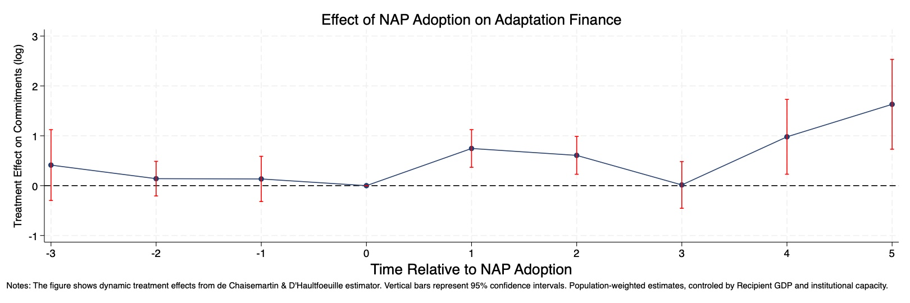
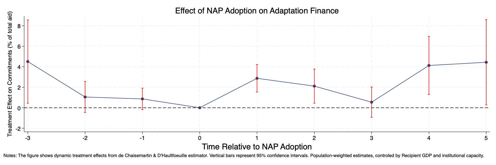

🧩 NAPs as Signals
The theoretical model shows how NAPs raise effective capacity, shifting donors’ portfolios toward
adaptation within a CES framework over climate vs. other aid and across recipient countries.
By Pierre Beaucoral, Michaël Goujon, and Sébastien Marchand
“No Plan, No Aid?” develops an integrated theoretical and empirical framework to assess whether adopting a National Adaptation Plan (NAP) increases a country’s received adaptation finance. In the model, NAPs simultaneously signal higher institutional capacity and potentially lower vulnerability, affecting how donors allocate their envelopes across countries and between climate and non-climate activities.
Empirically, the paper exploits the staggered timing of NAP adoption and applies the de Chaisemartin & d’Haultfoeuille (2023) estimator to a panel of developing countries from 2013–2023, using OECD CRS commitments tagged with adaptation Rio markers. The event-study results show that NAP adoption is followed by a large and sustained increase in adaptation commitments, with no comparable change in total or non-adaptation aid. When focusing on a country’s share of global adaptation finance, NAP adopters gain about 2.8 percentage points on average, and up to 4–4.5 points five years after adoption. Donor heterogeneity analyses reveal that these gains are driven mainly by DAC bilateral and multilateral donors, and particularly by capacity-oriented donors.



On the theory side, the paper embeds NAPs in a Recipient–Donor allocation model. Donors allocate an overall budget B across countries and between climate (adaptation) aid and other aid using CES aggregators. A NAP indicator raises a country’s effective capacity, which in turn shifts the optimal climate share and the country’s envelope. The model generates clear, testable predictions:
On the empirical side, the paper combines:
Baseline results. Dynamic estimates show that adaptation commitments rise strongly after NAP adoption. One year after adoption, commitments increase by about 0.75 log points, remaining sizeable in later years, with an average post-treatment effect of roughly 0.77 log points (around a doubling of adaptation commitments). Pre-treatment leads are small and statistically insignificant, and a placebo test that shifts treatment two years earlier yields null effects.
Shares vs. levels. When the outcome is the share of total global adaptation finance received by a country in a given year, NAP adoption increases this share by about 2.8 percentage points on average, and up to 4–4.5 percentage points five years after adoption. In contrast, total aid and non-adaptation aid remain largely unchanged, pointing to a strong composition effect toward adaptation rather than an expansion of overall envelopes.
Donor heterogeneity. Estimating the dynamic effects by donor type shows that the response is driven by DAC members and multilateral donors, while non-DAC and private donors exhibit negligible changes. A further split by donor orientation—capacity- vs. vulnerability-oriented—confirms the theoretical mechanism: capacity-oriented donors increase adaptation finance after NAP adoption, whereas vulnerability-oriented donors do not respond systematically.
Overall, the evidence supports the headline message of the paper: NAPs “pay off” mainly by reshaping the composition and cross-country allocation of adaptation finance, rather than by dramatically expanding total development finance.